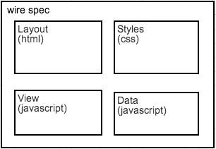
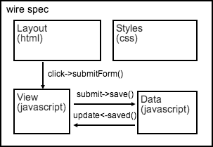
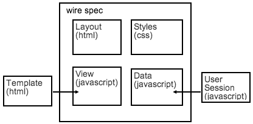
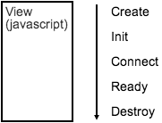

1 - Be Modular
|
 |
|
2 - Connect Your Modules
|
 |
|
3 - Inject Their Dependencies
|
 |
|
4 - Control Their Lifecycle
|
 |
|
For best results you'll want to fetch the tutorial so you can play along. We use git for source control. When you have git just clone this repo like so:
git clone git@github.com:gehan/seed.git
git checkout wire
To run the webserver and install our libraries we use node.js. When you have node just go to the root of this repo and run this to download everything:
npm install
This will install a small webserver, our js package manager bower, and download all the libraries. To start the server run:
npm start
Point your browser (Chrome ideally) to http://localhost:8000/ and you should see this in the console
Spec loading OK! Context available as 'context'
After this you're all ready to go! Head to step 1 to get building this app!
An empty wire environment should be running. Let's quickly explain how this is happening before we move onto something more visible!
Your index.html looks quite small doesn't it? It now serves as a minimal shell to start up your app.
Here we define any AMD packages we are going to use, and start up our wire spec!
(function(curl){
// Configure all our module paths
var config = {
paths: {
'jquery': 'lib/jquery/jquery'
},
packages: [
{ name: 'curl', location: 'lib/curl/src/curl' },
{ name: 'wire', location: 'lib/wire', main: 'wire' },
{ name: 'meld', location: 'lib/meld', main: 'meld' },
{ name: 'when', location: 'lib/when', main: 'when' },
{ name: 'poly', location: 'lib/poly' }
]
};
// If our app starts correctly then log and make the context available
var success = function (context) {
console.log('Spec loading OK! Context available as \'context\'');
window.context = context;
};
// If something goes wrong then we log that error
var fail = function (error) {
console.log('Error loading spec');
console.error(error.stack);
};
// Start up the app! Runs our app/spec.js through wire. Curl is
// promise-based so we can pass the result to our success/failure handlers
curl(config, ['wire!app/spec']).then(success, fail);
})(curl);
Finally - this is where the magic happens - the wire spec!
define({
hello: 'world'
});
If you looked closely at the run.js you'll see that window.context has been set. If you type 'context.hello' in the console you should now get 'world'. We'll come onto what this means later
For now our spec is looking a little tiny. Let's put something in it to show you what it can do - move to step 2!
To show how wire.js works, let's load up some good old html and css for our Mail App. We'll start with a static template and make it dynamic later.
New files:
So how do we get these into the DOM without touching index.html?
The concept we'd like to introduce to do is component factories